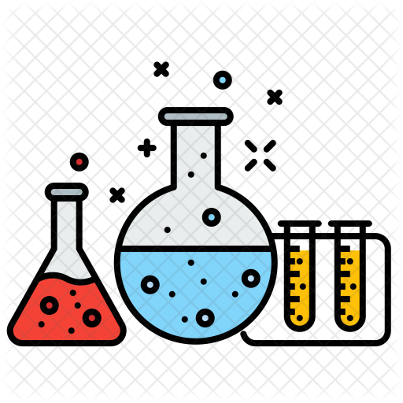

Химия (от др.греч. — «смешивание») — одна из важнейших и обширных областей естествознания, наука о веществах, их свойствах, строении и превращениях, происходящих в результате химических реакций, а также фундаментальных законах, которым эти превращения подчиняются. Поскольку все вещества состоят из атомов, которые благодаря химическим связям способны формировать молекулы, то химия занимается в основном изучением взаимодействий между атомами и молекулами, полученными в результате таких взаимодействий. Предмет химии — химические элементы и их соединения, а также закономерности, которым подчиняются различные химические реакции.